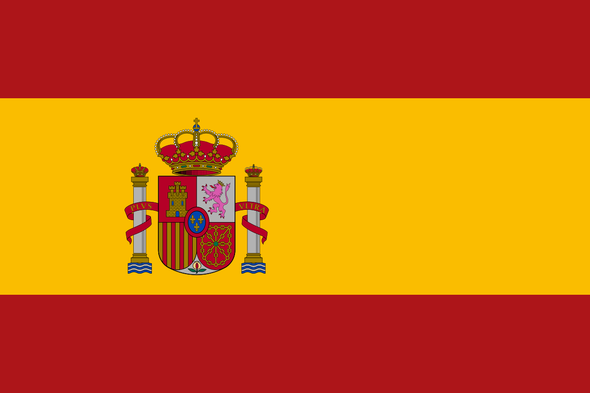
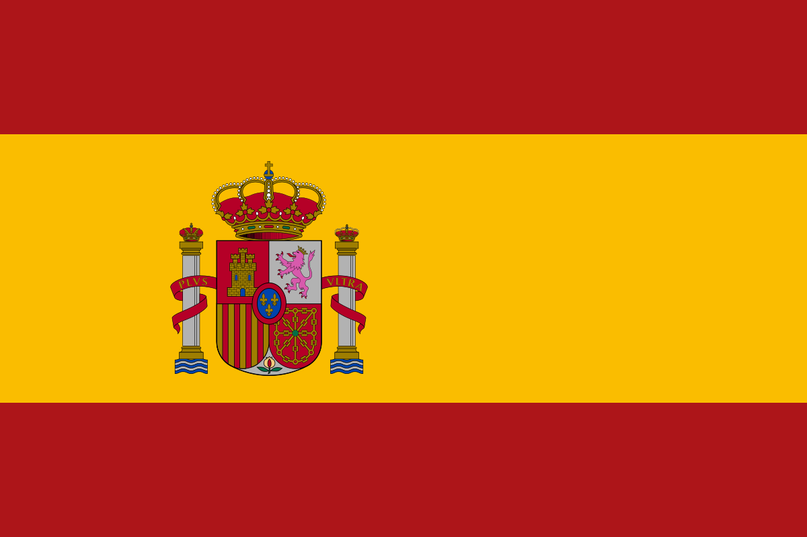

INPA - Bosque da Ciência
O Bosque da Ciência apresenta a fauna amazônica, como peixe-boi, ariranhas e jacarés, e oferece trilhas e atividades educativas sobre conservação ambiental.
Tarde Amazônica
 



INPA • Zoológico CIGS • Ponte Rio Negro • Ponta Negra
O passeio Tarde Amazônica começa no Bosque da Ciência do INPA, onde se conhecem espécies como peixe-boi, ariranhas e jacarés, com trilhas educativas sobre conservação. Segue para o Zoo do CIGS, que abriga diversas espécies da fauna amazônica e colabora com pesquisas científicas. Depois, passa pela Ponte Rio Negro, obra de engenharia que liga Manaus a municípios vizinhos e se destaca pela arquitetura. Finaliza na Ponta Negra, área revitalizada às margens do Rio Negro, com lazer, gastronomia e eventos culturais, oferecendo vistas encantadoras do rio.
O Bosque da Ciência apresenta a fauna amazônica, como peixe-boi, ariranhas e jacarés, e oferece trilhas e atividades educativas sobre conservação ambiental.
O Zoo do CIGS abriga diversas espécies da Amazônia e realiza pesquisas científicas, além de promover educação ambiental e receber visitantes de escolas e turistas.
A Ponte Rio Negro, com suas quatro faixas e calçadas, liga Manaus a municípios vizinhos e é um marco da engenharia e arquitetura amazônica.

A Ponta Negra, às margens do Rio Negro, é área de lazer com calçadões, bares, restaurantes e espaço para eventos culturais, oferecendo belas vistas do rio.
Reservas e informações: Diego Nascimento
Horário: 14h – 17h • (1 a 4 passageiros)